O diagramă este un instrument pe care îl puteți utiliza pentru a comunica informații grafic.
Includerea unei diagrame în document vă poate ajuta să ilustrați date numerice,
cum ar fi comparații și tendințe, astfel încât să fie mai ușor de înțeles de către cititor.
-
Plasați punctul de inserare acolo unde doriți să apară diagrama.
-
Navigați la fila Inserare, apoi faceți clic pe comanda Chart din grupul Ilustrații.
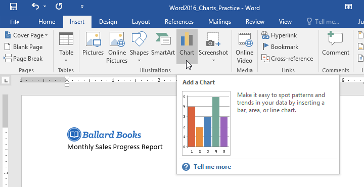
-
Va apărea o casetă de dialog. Pentru a vizualiza opțiunile, alegeți un tip de diagramă din panoul din stânga, apoi răsfoiți diagramele din dreapta.
-
Selectați diagrama dorită , apoi faceți clic pe OK.
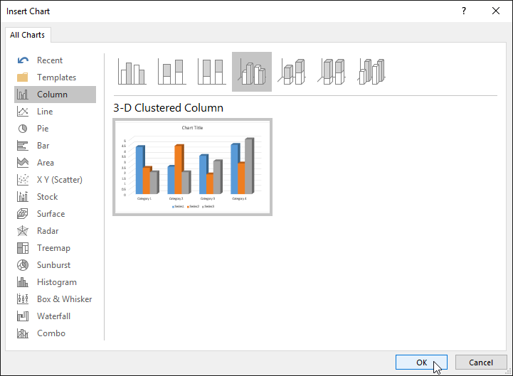
-
Va apărea o fereastră de diagramă și foaie de calcul. Textul din foaia de calcul este doar un substituent pe care
va trebui să-l înlocuiți cu propriile date sursă.
Datele sursă sunt ceea ce Word va folosi pentru a crea diagrama.
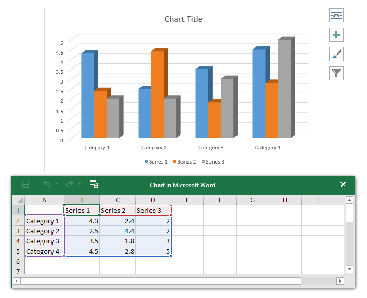
-
Introduceți datele sursă în foaia de calcul.
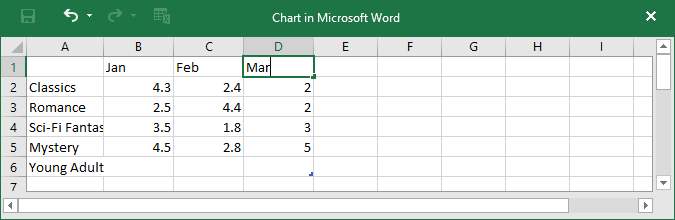
-
Doar datele incluse în caseta albastră vor apărea în diagramă.
Dacă este necesar, faceți clic și trageți colțul din dreapta jos alcasetă albastră pentru a mări sau micșora manual intervalul de date.
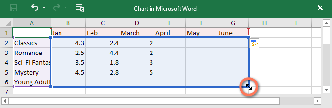
-
Când ați terminat, faceți clic pe X pentru a închide fereastra foii de calcul.
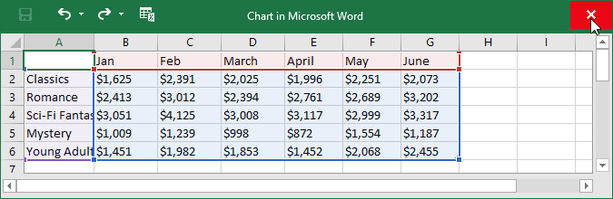
-
Graficul va fi complet.
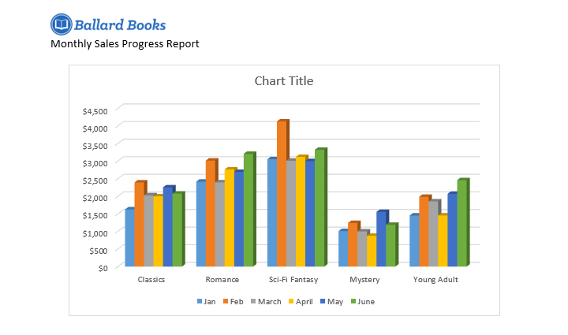
Există multe moduri de a vă personaliza și organiza diagrama în Word.
De exemplu, puteți schimba rapid tipul diagramei, puteți rearanja datele și chiar puteți modifica aspectul diagramei.
Uneori este posibil să doriți să schimbați modul în care sunt grupate datele din diagramă.
De exemplu, în graficul de mai jos datele sunt grupate pe gen , cu coloane pentru fiecare lună.
Dacă schimbăm rândurile și coloanele, datele ar fi grupate pe lună.
În ambele cazuri, graficul conține aceleași date - este doar prezentat într-un mod diferit.
-
Selectați diagrama pe care doriți să o modificați. Fila Design va apărea în partea dreaptă a Panglicii.
-
Din fila Design, faceți clic pe comanda Editare date din grupul Date.
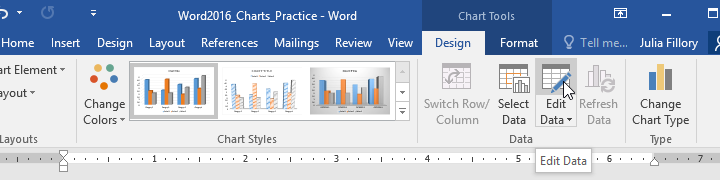
-
Faceți clic din nou pe diagramă pentru a o reselege, apoi faceți clic pe comanda Comutare rând/coloană.
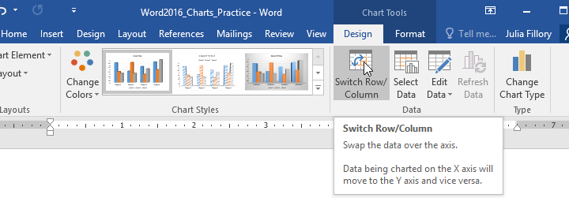
-
Rândurile și coloanele vor fi schimbate . În exemplul nostru, datele sunt acum grupate pe lună, cu coloane pentru fiecare gen.
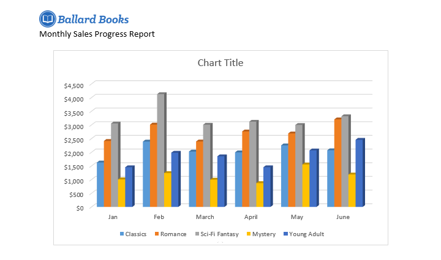
Dacă descoperiți că tipul de diagramă ales nu este potrivit pentru datele dvs., îl puteți schimba cu unul diferit.
În exemplul nostru, vom schimba tipul de diagramă dintr-o diagramă cu coloană într-o diagramă cu linii.
-
Selectați diagrama pe care doriți să o modificați. Va apărea fila Design.
-
Din fila Design, faceți clic pe comanda Modificare tip diagramă.
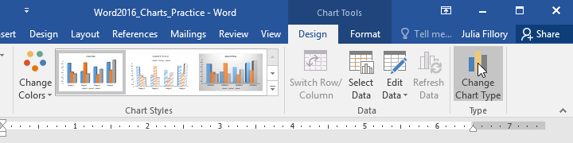
-
Va apărea o casetă de dialog. Selectați diagrama dorită, apoi faceți clic pe OK.
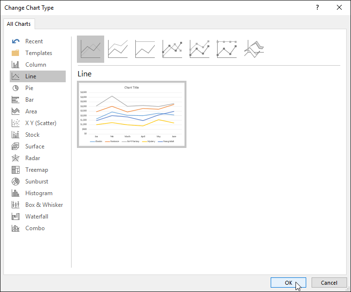
-
Se va aplica noul tip de diagramă. În exemplul nostru, graficul cu linii face mai ușor să vedeți tendințele în timp.
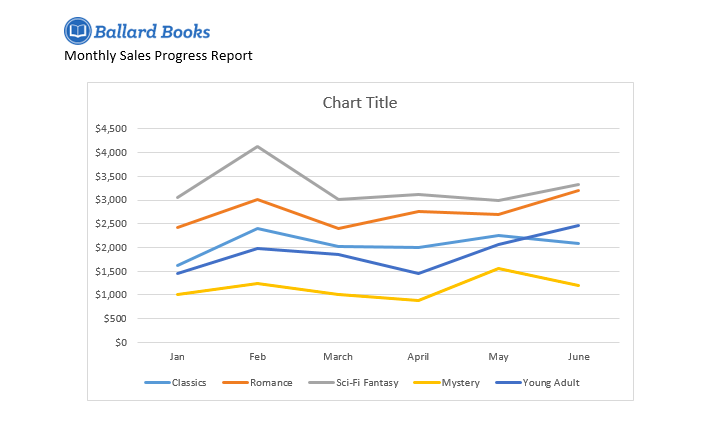
Pentru a schimba aranjamentul diagramei, încercați să alegeți un alt aspect.
Aspectul poate afecta mai multe elemente, inclusivtitlul diagramei și etichetele datelor.
-
Selectați diagrama pe care doriți să o modificați. Va apărea fila Design.
-
Din fila Design, faceți clic pe comanda Quick Layout.
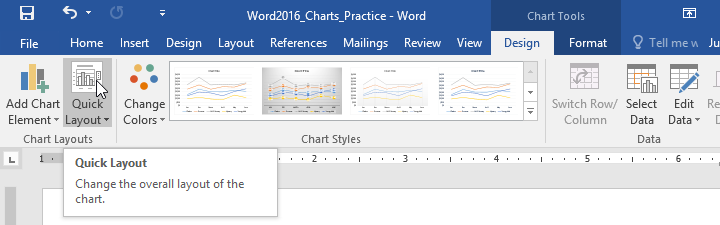
-
Alegeți aspectul dorit din meniul derulant.
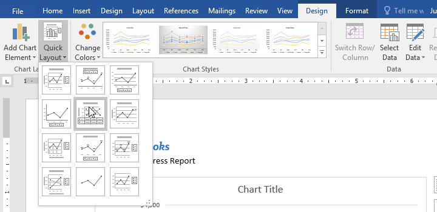
-
Graficul se va actualiza pentru a reflecta noul aspect.
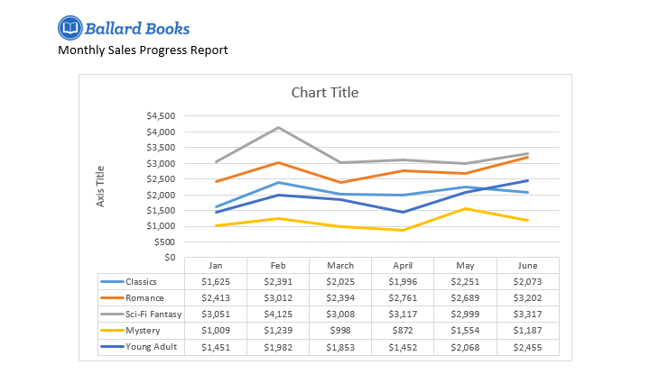
Stilurile de diagramă ale Word vă oferă o modalitate ușoară de a schimba designul diagramei, inclusiv culoarea, stilul și anumite elemente de aspect.
-
Selectați diagrama pe care doriți să o modificați. Va apărea fila Design.
-
Din fila Design, faceți clic pe săgeata derulantă Mai multe din grupul Stiluri de diagramă.
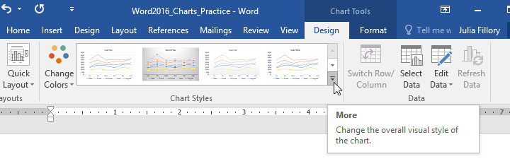
-
Va apărea un meniu derulant de stiluri. Selectați stilul dorit.
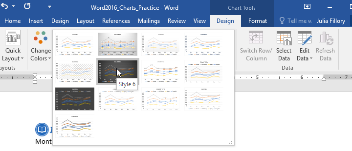
-
Se va aplica stilul diagramei.
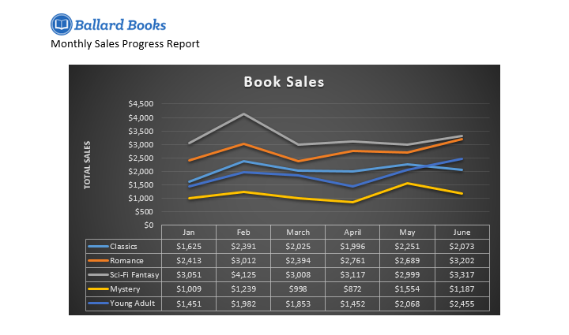